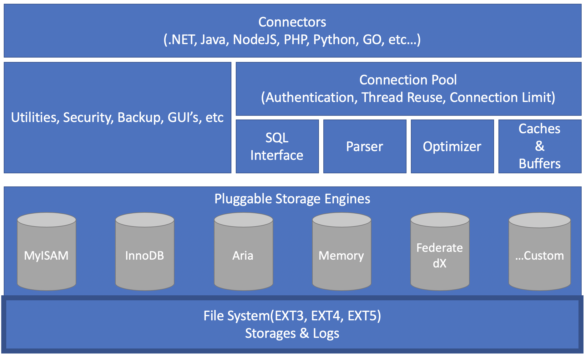

介紹如何使用 MySqlConnector 讓 .NET Standard/.NET Core 可以對 MariaDB/MySQL 進行基本的操作．
最近開始學習一些非微軟且 Open Source的技術，在 RDBMS 的選項中選擇使用 MariaDB．今天就分享如何讓 .NET 也能基本的使用CRUD.
About MariaDB
MariaDB 資料庫管理系統是MySQL的一個分支，主要由開源社群在維護，採用 GPL 授權授權。MariaDB 是由MySQL的創始人 Ulf Michael Widenius 主導開發並以他女兒的名字為該專案命名．
MariaDB 的特色是 MariaDB 的 API 和協定相容 MySQL，但又擴充了一些功能，以支援原生的非阻塞操作和進度報告。這也讓當前使用MySQL的連結器、程式庫和應用程式也將可以在 MariaDB 正常運作．
整個 MariaDB 的架構可以參考下圖：

更深入的介紹可以參考MariaDB: in-depth (hands on training in Seoul)
How to operate Data via .NET with MariaDB
由上面簡單的介紹可以知道 MariaDB 基本上跟 MySQL 是相同但跟先進，且所有工具都能直接沿用的．
所以這邊直接切入本篇重點使用 MySqlConnector 來協助 .NET 操作 MariaDB 的資料．
MySqlConnector 不是 MySQL 官方推出的套件，但號稱比官方效能更好且完美的支援常見的 ORM 框架如：Dapper, NReco.Data, Paradigm ORM, ServiceStack.OrmLite 與 SimpleStack.Orm 等。
而最棒的是他有實作非同步的介面讓開發更為方便。
Host MariaDB on Docker
這邊的範例使用 Docker 來運行 MariaDB, 操作上只有兩步驟：
拉取 MariaDB image
docker pull mariadb運行一個 Instance 並設定密碼與 port 對外
docker run -p 3306:3306 --name lab-mariadb -e MYSQL_ROOT_PASSWORD=pass.123 -d mariadb
MariaDB CRUD via MySqlConnector
接著開一個 .NET Standard 專案後從 nuget 加入 MySqlConnector
dotnet add package MySqlConnector
接著我們簡單地透過以下的樣式就可以建立第一個 Read 的操作：
1 | public class UserRepository : IUserRepository |
從上面可以看到步驟依序為：
- 設定一個連線字串，並提供主機 host 、連線帳號與密碼、預設連入的 DB 名稱
- 透過連線字串建立一個 MySqlConnection
- 透過 conn.OpenAsync(); 以非同步的方式開啟連線
- 接著建立 MySqlCommand 物件後放入下面屬性資料：
- 使用的連線實體(Connection)
- 執行的指令(CommandText)
- 避免 SQL Injection 的參數化傳值(Parameters)
- 接著就是看操作指令的回傳類型決定是呼叫有回傳值的 cmd.ExecuteReaderAsync() 或是無回傳值的 cmd.ExecuteNonQueryAsync()
- 如果是有回傳值的就是透過 reader.ReadAsync() 一筆筆讀出資料
- 可透過不同型別的資料去給予回傳的欄位index 即可。而且欄位資料可以透過 reader.IsDBNull 確認當前回傳是否為 null 並進行 nullable 處理
以上就是一個基本的流程，所以同理補上新增的範例如下:
1 | public async Task CreateUser(UserDto inputObj) |
這邊參考了官方的建議使用在每一個操作後就透過 conn 外面包裹的 using 架構，直接 Dispose 時關閉 DB 連線，避免有漏關的狀況發生。
而上面的程式碼寫法與相關注意事項可以參考以下三篇文章的說明:
- Proper Etiquette for using MySQL in C# (Part of 1 of 3) – IDisposable
- Proper Etiquette for using MySQL in C# (Part of 2 of 3) – Parameterized Queries
- Proper Etiquette for using MySQL in C# (Part of 3 of 3) – DbDataReader
而完整的範例與測試可以參考：dotnet-mariadb-lab